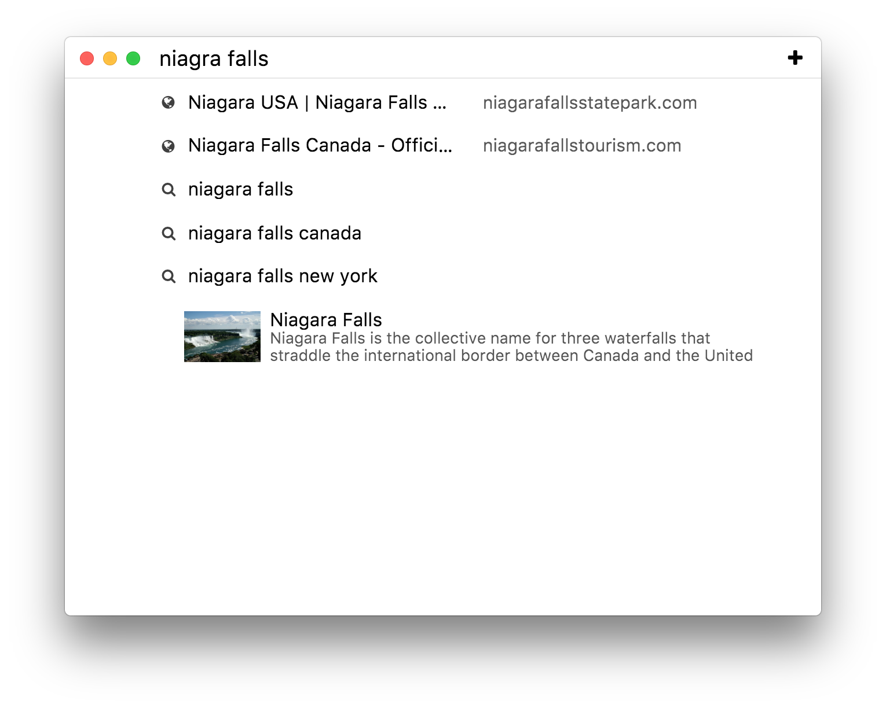
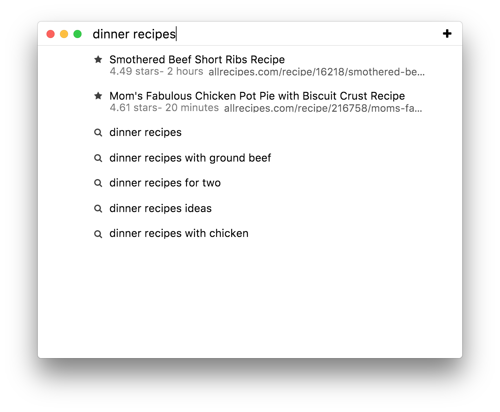
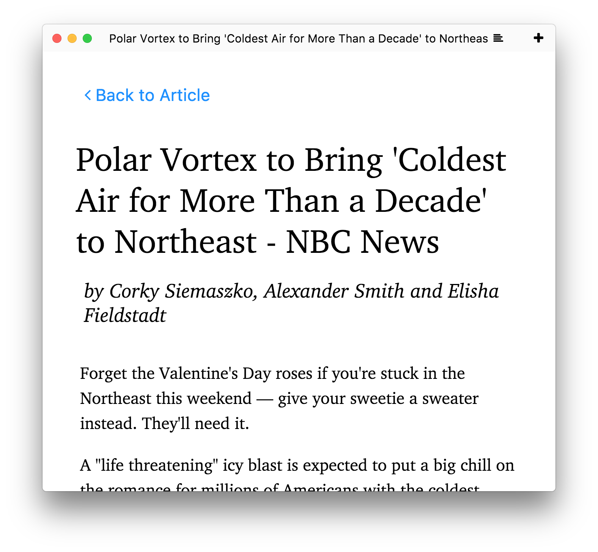

Tabs you haven't looked at in a while fade out, and brighten again when you click on them.
Search
The searchbar shows information from DuckDuckGo, including Wikipedia entries, a calculator, programming documentation, and more.
The searchbar also supports fuzzy search, which lets you quickly find websites without typing the entire URL. For example, you can type "mgc" to search for "mail.google.com".

Bookmarks
Click the icon in the searchbar to bookmark a page. When you create a bookmark, the full text of the webpage is saved, and becomes searchble, so you can find your bookmarks later.

Reading List
Click the icon in a tab to format an article and make it easier to read. Articles opened in reader view are saved in your reading list for the next 30 days, and are saved for offline reading.
You can find your saved articles in the application menu: View > Reading List.

Ad and tracker blocking
Go to Min > Privacy Preferences (Or the Edit menu > Privacy Preferences on Linux) to enable ad and tracker blocking. You can also choose to block images and Javascript, if you are on a limited internet connection.
Tips and Tricks
Swipe down on the tabstrip (or press ⇧+⌘+E) to expand the tabstrip and view all of your open tabs in a grid.
Quickly switch between tabs: press ⌘+1 to move one tab to the right, ⌘+2 to move two tabs to the right, etc. ⇧+⌘+1 moves one tab to the left.
Focus Mode lets you hide distractions. In focus mode, all your tabs except the current one are hidden, and you can't create new tabs. Turn on focus mode in the View menu > Focus Mode.